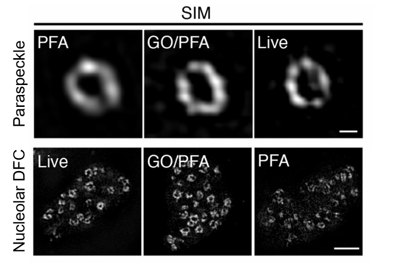
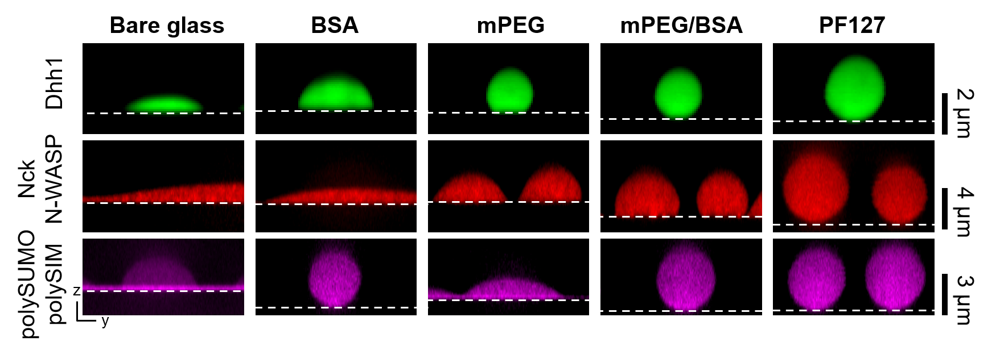
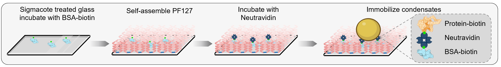

Biomolecular condensates are difficult to study because the methods used to observe them often perturb the very properties one hopes to measure. A major part of my work is therefore to build quantitative tools that preserve condensate architecture while enabling sensitive analysis of molecular organization and dynamics. I combine super-resolution imaging, biochemical reconstitution, and single-molecule approaches to create experimental systems that make condensates measurable across scales.
Preserving condensate architecture in cells
A central challenge in imaging nuclear condensates is that conventional fixation methods often force a trade-off between RNA detection, protein labeling, and structural preservation. To overcome this, I developed an optimized fixation strategy that combines glyoxal with paraformaldehyde (RNA, 2021). This method markedly improves RNA FISH signal by increasing nuclear permeability and probe accessibility, while maintaining low background and avoiding additional autofluorescence. At the same time, it preserves protein epitopes and fluorescent protein signals during immunostaining and RNA FISH, enabling more accurate protein labeling and simultaneous multicolor visualization of RNAs and proteins in the same nuclear condensate. Importantly, this improvement in signal does not come at the cost of structure: the method better preserves cell morphology and condensate ultrastructure, allowing covisualization of nucleoli, paraspeckles, nuclear speckles, Cajal bodies, and other nuclear bodies with minimal distortion even under super-resolution microscopy.

High-sensitivity assays for reconstituted condensates
In biochemical reconstitution, a parallel problem is undesired interaction between condensates and glass surfaces, which can distort droplet morphology, alter material properties, and generate background that limits sensitive measurements. To address this, I developed a simple surface passivation strategy based on self-assembly of Pluronic F127 on hydrophobic glass (PNAS, 2024). PF127 forms a dense hydrated brush layer that strongly suppresses nonspecific binding of both condensates and dilute-phase molecules, outperforming traditional BSA- and mPEG-based methods across diverse condensate systems. The method is straightforward and robust: it requires less than 1 hour of active handling, can be completed within 3 hours, and reduces cost by 99% relative to standard mPEG/BSA passivation, making high-quality condensate assays much more accessible and reproducible.

Crucially, this gain in performance does not come at the expense of condensate integrity. PF127 passivation remains stable across extensive washing, broad pH and salt ranges, and large imaging areas, while preserving condensate phase behavior and material properties. By combining PF127 with Biotin–NeutrAvidin anchor points, I further enabled controlled immobilization of condensates without inducing appreciable wetting or altering intrinsic physical behavior. This platform supports movement-sensitive measurements such as FRAP, droplet fusion assays, 3D imaging, and especially high-precision single-molecule analyses by minimizing background fluorescence and stabilizing droplets during acquisition. Using this strategy, I was able to resolve single-molecule dynamics within reconstituted condensates and begin probing their internal molecular heterogeneity.

Integrated imaging and perturbation tools for condensate dynamics
Beyond dedicated methods papers, I have also contributed to complementary tools for interrogating condensate-associated RNA behavior, including a CRISPR–Cas13-based live-cell RNA imaging system (Molecular Cell, 2019a) and a CRISPR-based interference strategy for selectively blocking RNA–protein interactions (Molecular Cell, 2019b). Together with my extensive use of super-resolution microscopy, these efforts define a broader research direction: building quantitative experimental systems that connect condensate architecture to molecular dynamics and biological function.